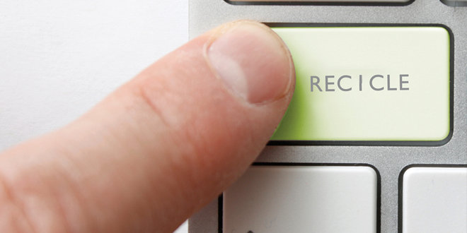
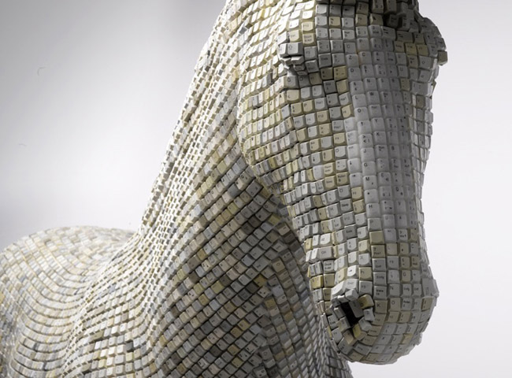

Você sabe o que é Lixo Eletrônico?
 Lixo Eletrônico é todo resíduo material produzido pelo descarte de equipamentos eletrônicos. Com o elevado uso de equipamentos eletrônicos no mundo moderno, este tipo de lixo tem se tornado um grande problema ambiental quando não descartado em locais adequados.
Lixo Eletrônico é todo resíduo material produzido pelo descarte de equipamentos eletrônicos. Com o elevado uso de equipamentos eletrônicos no mundo moderno, este tipo de lixo tem se tornado um grande problema ambiental quando não descartado em locais adequados.
Aproveitando o Lixo Eletrônico para fazer artesanato
Reutilização, durante a descaracterização dos equipamentos, são encontradas peças interessantes, que podem oportunizar a confecção de artesanato, através de convênios com escolas e outras entidades para realização de oficinas, fomentando o desenvolvimento da educação ambiental, sendo uma importante ferramenta de geração de renda.